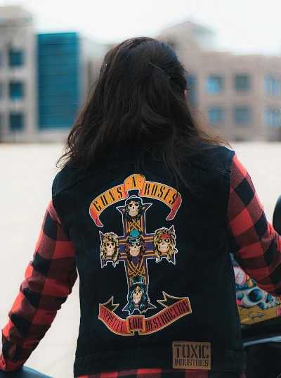

El grupo fue fundado por el vocalista Axl Rose y el antiguo guitarrista Izzy Stradlin en el año 1985, Los Ángeles, California.
Guns N'Roses es una de las bandas que más han marcado el genéro rockero, además han colaborado con otros grandes artistas, como The Rolling Stones o
como Bruce Springsteen tal como se menciona en la sección de categorías.
Legado y repercusión mundial
Las ventas ascienden a más de ciento cincuenta millones de álbumes a nivel mundial, posicionandolos en el puesto
dieciocho de los artistas con más ventas y éxitos. Además, cuatro de sus canciones entraron en la conocida lista de Billboard,
llegando a ser el número uno con el tema Sweet Child o' Mine.
La banda más peligrosa del planeta
La banda tuvo su auge entre 1987 y 1993 donde obtuvieron una gran popularidad. Después de esta época
triunfal, la banda tuvo algunos conflictos tanto con la opinión pública como con los antiguos miembros,
ya que siempre han sido conocidos por su fuerza, rebeldía y actitudes provocativas.

Fandom Guns N' Roses.
Sobre nosotros
Este sitio web está creado para recopilar la información más conocida y representativa de la banda, así como para
revivir los mejores momentos de Guns N' Roses y dedicado a los fans del Hard Rock, de manera no oficial.
Suscríbete a la Newsletter
Introduce tu correo electrónico para recibir noticias, novedades, o futuros conciertos de Guns N'Roses.